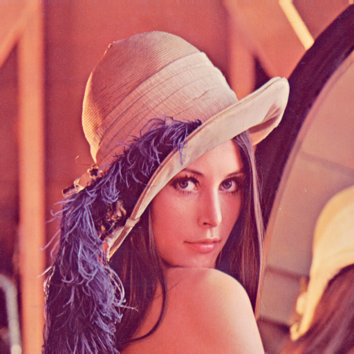

|  |
Image Processing in C
A set of modules that allow for the manipulation of Binary, RGB and Grayscale images. Also included is a main.c script that shows a text interface allowing for the testing of all of the modules' features
|
1.8.13